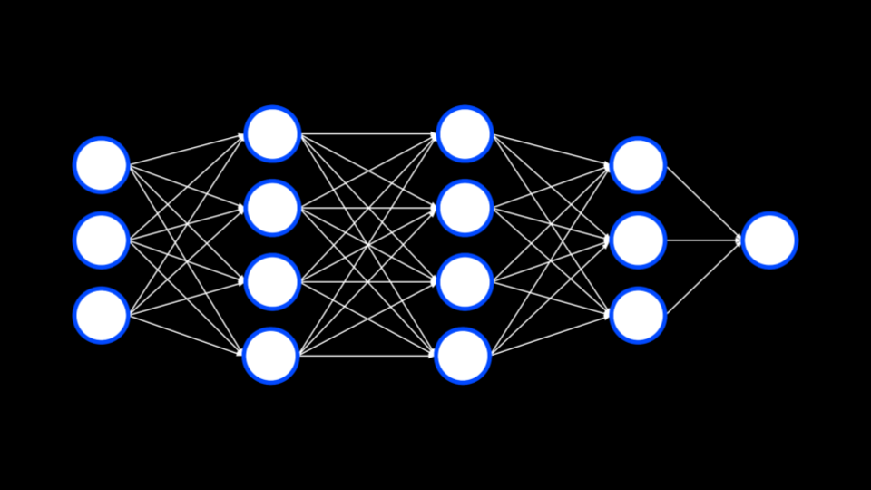

Artificial Intelligence
- Welcome!
- Generative AI
- AI and CS50
- Prompt Engineering
- AI
- Decision Trees
- Minimax
- Machine Learning
- Deep Learning
- Large Language Models
- Summing Up
Welcome!
- In computer science and programming circles, rubber ducking or rubber duck debugging is the act of speaking to an inanimate object to be able to talk through a challenging problem.
- Most recently, CS50 created our own rubber duck debugger at CS50.ai, which uses artificial intelligence as a way by which to interact with students to help them with their own challenging problems.
- Students engaging with this tool can begin understanding the potential of what AI can offer the world.
Generative AI
- Numerous AI tools have created the potential for artificially generated images to enter the world.
- Up until years past, most of these tools had numerous tells that might indicate to an observer that an image is AI-generated.
- However, tools are becoming exceedingly good at generating these images.
- Indeed, as technology improves, it will soon be almost, if not entirely, impossible for such images to be detected with the naked eye.
- Software has also gained the ability to mutate individual images within video.
- A very well-known bleeding-edge tool is the text generation tool chatGPT.
AI and CS50
- In CS50, we do not allow the use of ChatGPT.
- CS50 provides clear guidance for students, in our academic honesty policy, on what is considered reasonable and unreasonable use of AI.
- We do allow the use of our own rubber duck debugger at CS50.ai.
- In CS50, we leverage the tools of Azure and OpenAI, along with our own vector database that holds very recent information from our most recent lectures and offerings, to provide our rubber duck debugger toll.
- CS50.ai is highly utilized by our students worldwide. 201k students and teachers have generated approximately 35k prompts/day since the birth of the tool. That is, 9.4 million prompts total have been provided to the duck.
- Our rubber duck debugger can provide conceptual help with computer science concepts.
- Further, the rubber duck debugger can help students write more efficient code.
- Additionally, the rubber duck debugger can help when a student is stuck in one of their assignments. For example, students may encounter errors that prevent them from progressing in their assignments. When students hit a wall, they don’t have to wait for support staff to be available.
- Pedagogically, our goal is to provide a 1:1 tutor for students 24 hours a day.
Prompt Engineering
- Prompt engineering is the way by which an individual can ask good questions of an AI.
- We use a system prompt to teach the AI how to interact with users. We teach the AI how to work with students using such a prompt.
- User prompts are those provided by users to interact with the AI. With these prompts, students interact with the AI.
-
We can implement this in code as follows:
import os from dotenv import load_dotenv load_dotenv() from openai import OpenAI client = OpenAI(api_key=os.environm["API_KEY"]) system_prompt = "You are a friendly and supportive teaching assistant for CS50. You are also a duck." user_prompt = input("What's your question? ") chat_completion = client.chat.completions.create( messages=[ {"role": "system", "content": system_prompt}, {"role": "user", "content": user_prompt} ], model="gpt-4o" ) response_text = chat_completion.choices[0].message.content print(response_text)You can run this code with
python chat.py.
AI
- AI has been with us for much time! Software has long adapted to users. Algorithms look for patterns in junk mail, in handwriting recognition, in creating movie recommendations, and in playing games.
- In games, for example, step-by-step instructions may allow a computerized adversary to play a game of Breakout.
Decision Trees
- Decision trees are used by an algorithm to decide what decision to make.
-
For example, in Breakout, an algorithm may consider what choice to make based on the instructions in the code:
While game is ongoing: If ball is left of paddle: Move paddle left Else if ball is right of padding: Move paddle right Else: Don't move paddle - With most games, they attempt to minimize the number of calculations required to compete with the player.
Minimax
- AI is often good at gameplay because it reduces moves and outcomes to mathematical values.
- You can imagine where an algorithm may score outcomes as positive, negative, and neutral.
- In tic-tac-toe, the AI may consider a board where the computer wins as
1and one where the computer loses as-1. - You can imagine how a computer may look at a decision tree of potential outcomes and assign scores to each potential move.
- The computer will attempt to win by maximizing its own score.
-
In the context of tic-tac-toe, the algorithm may conceptualize this as follows:
If player is X: For each possible move: Calculate score for board Choose move with highest score Else if player is O: For each possible move: Calculate score for board Choose move with lowest score -
This could be pictured as follows:

- Because computers are so powerful, they can crunch massive potential outcomes. However, the computers in our pockets or on our desks may not be able to calculate trillions of options. This is where machine learning can help.
Machine Learning
- Machine learning is a way by which a computer can learn through reinforcement.
- A computer can learn how to flip a pancake.
- A computer can learn how to play The Floor is Lava.
- The computer repeats trial after trial after trial to discover what behaviors to repeat and those not to repeat.
-
Within much of AI-based algorithms, there are concepts of explore vs. exploit, where the AI may randomly try something that may not be considered optimal. Randomness can yield better outcomes. This can be represented in code as follows:
epsilon = 0.10 If random() < epsilon: Make a random move Else: Make the move with the highest value
Deep Learning
- Deep learning uses neural networks whereby problems and solutions are explored.
-
For example, deep learning may attempt to predict whether a blue or red dot will appear somewhere on a graph. Consider the following image:

- Existing training data is used to predict an outcome. Further, more training data may be created by the AI to discover further patterns.
-
Deep learning creates nodes (pictured below) that associate inputs and outputs.

Large Language Models
- Large language models are massive models that make predictions based on huge amounts of training.
- Just a few years ago, AI was not very good at completing and generating sentences. Google published a paper in 2017 regarding how these AIs can have their attention drawn to the relationships between various words.
- Generative Pre-Trained Transformers (GPT for short) are trained on the relationships between words.
- The AI encodes words into embeddings to find relationships between words. Thus, through a huge amount of training, a massive neural network can predict the association between words - resulting in the ability for generative AI to generate content and even have conversations with users.
Summing Up
In this lesson, you learned about some of the technology behind CS50.ai. Specifically, we discussed…
- Image Generation
- Generative AI
- AI and CS50
- Prompt Engineering
- AI
- Decision Trees
- Minimax
- Machine Learning
- Deep Learning
- Large Language Models
This was CS50!